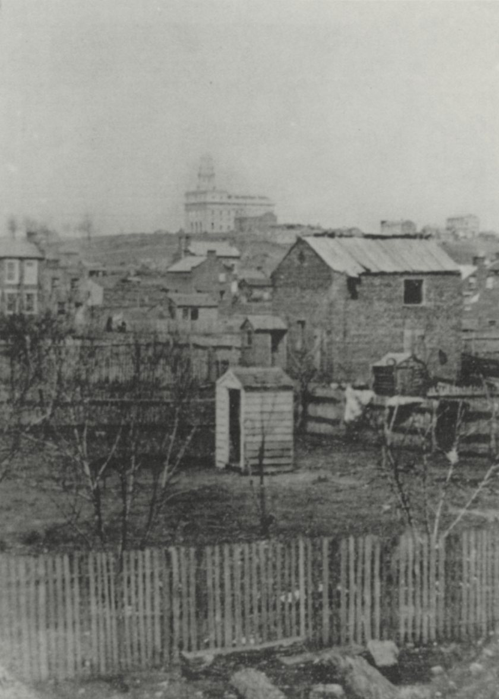

A City Beautiful
How beautiful upon the mountains are the feet of him that bringeth good tidings, that publisheth peace; that bringeth good tidings of good, that publisheth salvation; that saith unto Zion, Thy God reigneth!
Isaiah 52:7
“Build Up a City”
In late April 1839, days after reaching his people in Illinois, Joseph rode north about fifty miles from Quincy to look at land church leaders wanted to buy near a little river town called Commerce. For the first time in more than six months he was traveling without armed guards. He found a marshy floodplain rising gently to a wooded bluff over a wide bend of the Mississippi, with a few houses scattered about. It was not the best land he had ever seen. But the river ran all the way to the ocean, which made it a good place to gather converts from abroad, and the country was thinly settled.1
Gathering again was a risk. If the church grew, as Joseph hoped it would, its neighbors might turn against it as they had in Missouri. Some church leaders wondered whether the Saints should scatter into small communities instead, so they would never again alarm their neighbors as they had in Missouri. Joseph prayed: “Lord, what wilt Thou have me to do?” The answer was “Build up a city, and call my Saints to this place.”2 Thousands came. They pitched tents, lived in wagons, cleared farmland and began building houses on both sides of the river.3
Then the mosquitoes rose from the marshes. By midsummer malaria had spread through the camps, with deadly fevers and shaking chills. Most of the Twelve, who were supposed to be leaving on a mission to Britain, were too sick to go.4
On the morning of Monday, July 22, 1839, Wilford Woodruff heard Joseph’s voice outside his door in Montrose, across the river in Iowa Territory: “Brother Woodruff, follow me.” Joseph and a group of men had been going from house to house and tent to tent since morning, taking the sick by the hand and healing them. They had blessed the Saints in Commerce and then crossed by ferry to Montrose. Wilford followed them to the home of his friend Elijah Fordham. Elijah’s eyes were sunken and his skin was gray. His wife, Anna, was weeping as she got his burial clothes ready.5
Joseph took Elijah by the hand. “Brother Fordham, have you not faith to be healed?”
“I am afraid it is too late.”
“Do you not believe that Jesus is the Christ?”
“I do, Brother Joseph.”
“Elijah, I command you, in the name of Jesus of Nazareth, to arise and be made whole.”6
Elijah got up from his bed. He dressed, asked for something to eat and followed Joseph outside to help minister to others. That evening Phebe Woodruff visited and found him talking about working in his garden.7 Not everyone was healed. The sickness went on, and some Saints died.8
A Beautiful Situation
Joseph did not like the name Commerce. Almost as soon as he arrived, he renamed the place Nauvoo. “The name of our city,” he explained in a First Presidency proclamation, “is of Hebrew origin and signifies a beautiful situation or place, carrying with it also the idea of rest.”9

Joseph had some right to choose a Hebrew word. In the winter of 1836, as the Kirtland Temple was being finished, he and many others had studied Hebrew for seven weeks, usually in a room on the temple’s third floor. Their teacher was Joshua Seixas, a respected Hebraist born into a Jewish family. His father was Gershom Mendez Seixas, and Joshua himself had become a Christian. “My soul delights in reading the word of the Lord in the original,” Joseph wrote in his journal that February.10 At the end of the course, Seixas certified that Joseph had been “indefatigable in acquiring the principles of the sacred language of the Old Testament Scriptures in their original tongue,” and he thanked him for “his marked kindness towards me.”11 The Hebrew word Joseph chose for his city appears in Isaiah’s line about the beautiful feet of the messenger who brings good tidings.12
Nauvoo began to live up to its name. The Saints dug ditches to drain the swamps, laid out streets and planted gardens. By June 1840 about 250 new homes stood where there had been almost none.13 Before long it was one of the largest cities in Illinois, with nearly 10,000 people at its height.14
Rest also meant mending what Missouri had broken. W. W. Phelps, an early convert and the church’s printer, had turned against Joseph in Missouri and testified against him in court. Now he wrote from Ohio: “I know my situation, you know it, and God knows it, and I want to be saved if my friends will help me.” Joseph wrote back: “It is true that we have suffered much in consequence of your behavior. However, the cup has been drunk, the will of our Heavenly Father has been done, and we are yet alive.” He closed with a couplet: “Come on, dear brother, since the war is past, for friends at first are friends again at last.”15 Phelps came back and went to work for the church again.
“Act for Their Friends”
In the summer of 1840, sickness was still taking lives in Nauvoo. On August 15, Joseph spoke at the funeral of his friend Seymour Brunson. Thousands came. In the crowd Joseph noticed Jane Neyman, whose teenage son Cyrus had died before he could be baptized, and he knew she was afraid for his soul.16
Joseph opened the Bible to Paul’s first letter to the Corinthians: “Else what shall they do which are baptized for the dead, if the dead rise not at all? why are they then baptized for the dead?”17 Paul’s words, he explained, showed that a living person could be baptized on behalf of someone who had died. God’s plan, he said, was “calculated to save all who were willing to obey the requirements of the law of God,” including the countless people who had died without ever hearing of Christ. The Saints “could now act for their friends who had departed this life.”18
Soon afterward, Jane Neyman waded into the Mississippi River and was baptized for Cyrus by an elder named Harvey Olmstead. Vienna Jacques rode her horse into the river to hear the words of the prayer and serve as a witness.19 It was the first recorded baptism for the dead in the restored church. At the general conference that October, between sessions, Saints rushed to the river, where elders stood waist-deep in the water to baptize them for grandparents, parents, brothers, sisters and children.
For the Smith family the doctrine came just in time. Joseph Sr. had left Missouri in poor health, and Nauvoo’s summer made him weaker. In September he began vomiting blood, and Lucy sent for the children. Joseph sat with his father and told him about baptism for the dead, and the old man begged him to do it for Alvin.20
Then, one by one, Joseph Sr. blessed his children. To Hyrum he promised, “you shall be as firm as the pillars of Heaven unto the end of your days.” To Joseph he said, “hold out faithful and you shall be blessed, and your children after you— you shall even live to finish your work.” Joseph cried out, weeping, “Oh my father will I”, and his father answered, “Yes,” “you shall live to lay out the plan of all the work which, which God has given you to do.”21
Then he turned to his wife. “Mother; do you not know that you are one of the most singular women in the world?”
“No,” she said, “I do not.”
“Well I do,” he went on. “You have brought up my chidren; and could always comfort them when I could not— we have often wished, that we might both die at the same time; but you must not desire to die when I do; for you must stay to comfort the children when I am gone.”22
After a long pause he said, surprised, that he could see and hear as well as he ever could. After another pause he said, “I see Alvin.” Then he folded his hands, and in about eight minutes, Lucy wrote, “his breath stopped, without a struggle or a sigh.” He died in September 1840.23 Seventeen years earlier, Alvin’s last words to his family had included a charge to Joseph to get the plates. Now his father had seen him again. Soon after the October conference, Hyrum was baptized for his brother Alvin.24
A Temple on the Bluff
That July, Joseph had pointed to a spot high on the bluff above the city. “I obligate myself to build as great a temple as ever Solomon did, if the church will back me up,” he said. Then he added something that sounded almost like a farewell: “If it should be the will of God that I might live to behold that temple complete, I will say, ‘Oh, Lord, it is enough. Lord, let thy servant depart in peace.’”25 Those words echo old Simeon in the temple at Jerusalem, holding the infant Jesus: “Lord, now lettest thou thy servant depart in peace.”26
A revelation in January 1841 commanded the Saints to build the temple and said that baptism for the dead “belongeth to my house.”27 The temple was built mostly by consecrated labor and tithing. Men in each of Nauvoo’s ten wards gave one day in ten to quarrying and hauling stone. Women contributed through a penny fund. In the basement the Saints placed a baptismal font resting on the backs of twelve carved wooden oxen, like the “molten sea” that stood on twelve oxen in Solomon’s temple.28 By November 1841 the font was finished and dedicated under a temporary roof, while the walls were still rising around it.29 On the outside, the builders carved stones with suns, moons and stars.30
Before Sunrise on the Mount of Olives
Orson Hyde had wanted to go to Jerusalem ever since his baptism in 1831. In 1840, after a dream that showed him the route, he proposed the mission. Joseph commissioned him to represent the church to “the priests, rulers and Elders of the Jews.”31 Five years earlier, when Hyde was ordained an apostle, Joseph had told the Twelve that they held the authority to unlock the doors of the nations for the gathering of Israel.32 Now one of them would go.
He went alone across England and Europe, writing to leaders of Jewish communities on the way, then to Constantinople and by steamship to Jaffa. When he first saw Jerusalem from its western gate, he wept.33 For several days he walked its streets. When he saw people doing the ordinary work Jesus described in His parables, he felt carried back to the time of the Savior. In the garden of Gethsemane he picked a twig from an olive tree.34
On Sunday, October 24, 1841, Hyde later wrote, “a good while before day, I arose from sleep, and went out of the city as soon as the gates were opened, crossed the brook Cedron, and went upon the Mount of Olives.”35 Picture the city behind him still dark, perhaps a last few stars over the Kidron Valley.† There, “in solemn silence, with pen, ink, and paper,” he wrote out a prayer. He dedicated the land “for the gathering together of Judah’s scattered remnants, according to the predictions of the holy prophets.”36 He recalled the covenant God made with “Abraham, thy friend,” renewed with Isaac and confirmed with Jacob, and he prayed for the land itself:
Let the vine and the olive produce in their strength, and the fig tree bloom and flourish.37
He asked God to “incline them to gather in upon this land according to thy word. Let them come like clouds and like doves to their windows,” borrowing Isaiah’s words.38 Then he piled up a heap of stones on the Mount of Olives, “according to the ancient custom,” and another on Mount Zion.39
It was an American Christian’s prayer, written in the language of 1841, and it included hopes that belonged to his own faith. What stands out is how plainly it treated the return of the Jewish people to their land as God’s own work and promise. The Church’s historians note that Hyde “understood that this dedication would set in motion the gathering of God’s ancient covenant people, the Jews, and would be a work that the Jewish people themselves would then carry out.”40 In the letter that carried the prayer home, he wrote, “The idea of the Jews being restored to Palestine is gaining ground in Europe almost every day.”41 Neither Hyde nor anyone who heard his prayer read in Nauvoo lived to see the State of Israel founded in 1948.
More than a century later, in 1979, as the Church was preparing a memorial garden for Orson Hyde on the Mount of Olives, Elder Howard W. Hunter of the Quorum of the Twelve added something Hyde had not said. “It is not because we favor one people over another,” he explained. “Jerusalem is sacred to the Jews, but it is also sacred to the Arabs.” And: “Both the Jews and the Arabs are children of our Father. They are both children of promise, and as a church we do not take sides. We have love for and an interest in each.”42
“Something Extraordinary”
Early in 1842, a seamstress named Margaret Cook noticed that the men working on the temple needed shirts. She and her employer, Sarah Kimball, decided to start a ladies’ sewing society, and they asked Eliza R. Snow to write a constitution for it. When Eliza showed it to Joseph, he said it was the best he had seen. But the Lord, he said, had “something better” in mind for the women. He wanted to organize them “after the pattern, or order, of the priesthood.”43
On March 17, 1842, twenty women met with Joseph, John Taylor and Willard Richards in the large room above Joseph’s red brick store. They opened by singing “The Spirit of God Like a Fire Is Burning,” the hymn from the Kirtland Temple dedication.44 At Joseph’s suggestion the women elected a president. They chose Emma Smith, and she chose Sarah M. Cleveland and Elizabeth Ann Whitney as her counselors. Joseph then read the revelation given to Emma in 1830, which had called her “an elect lady.”45
Then they debated the name. John Taylor proposed calling it a “Benevolent” society. Emma objected that the word was attached to corrupt institutions of the day. When others worried that “Relief” suggested only great calamities, she answered, “we are going to do something extraordinary— when a boat is stuck on the rapids with a multitude of Mormons on board we shall consider that a loud call for relief— we expect extraordinary occasions and pressing calls.” Taylor conceded: “your arguments are so potent I cannot stand before them.” Joseph agreed: “all I shall have to give to the poor, I shall give to this Society.” Eliza Snow proposed the final wording: The Female Relief Society of Nauvoo.46 Joseph put in a five-dollar gold piece to start the society’s fund.47
On April 28 he told the women, “I now turn the key to you in the name of God, and this Society shall rejoice and knowledge and intelligence shall flow down from this time.” The society’s purpose, he taught, was “not only to relieve the poor, but to save souls.”48 By March 1844 more than 1,300 women had joined.49 Today’s Relief Society grew from that meeting above the store.50
“Let Them Worship How, Where, or What They May”
That same March, the Times and Seasons published a letter Joseph had written for John Wentworth, the editor of the Chicago Democrat, who wanted a sketch of the Latter-day Saints for a friend writing a history of New Hampshire.51 In a few pages Joseph told the story this book has told: the boy in the grove, the angel, the plates, the persecutions. He also gave a confident forecast. “Persecutions may rage, mobs may combine, armies may assemble, calumny may defame,” he wrote, “but the truth of God will go forth boldly, nobly, and independent till it has penetrated every continent, visited every clime, swept every country, and sounded in every ear.”52
He closed with thirteen short statements of belief, which Latter-day Saints now know as the Articles of Faith. One of them reads: “We believe all that God has revealed, all that he does now reveal, and we believe that he will yet reveal many great and important things pertaining to the kingdom of God.”53 Another, coming from a people just driven out of Missouri at gunpoint, is remarkably generous:
We claim the privilege of worshipping Almighty God according to the dictates of our conscience, and allow all men the same privilege let them worship how, where, or what they may.54
For Jewish readers, and for anyone whose faith has been a minority’s faith, that sentence may be the most important one Joseph ever wrote. It does not ask anyone to worship the way the Saints did. It says how, where, or what they may.
“Undaunted, Firm and Unwavering”
Nauvoo was also where the hardest part of Joseph’s life began in earnest, and any honest account must touch it, even briefly.
The Church teaches today that monogamy, the marriage of one man and one woman, is the Lord’s standing law of marriage. It also teaches that in biblical times the Lord sometimes commanded plural marriage, as with Abraham, Jacob and others, and that through Joseph Smith He commanded some early Latter-day Saints to practice it. The revelation was not written down until 1843, but people close to Joseph said that he first learned the principle around 1831 while studying the Old Testament.55 Joseph told associates that an angel appeared to him three times between 1834 and 1842 commanding him to go forward when he hesitated.56 The first plural marriage in Nauvoo, to Louisa Beaman, took place in April 1841, and Joseph married many additional wives. It was done in secret, and later public statements denied “spiritual wifery” and polygamy while staying silent about what Joseph considered a divinely commanded practice.57
The Church’s own essay on the subject calls it “among the most challenging aspects of the Restoration—for Joseph personally and for other Church members.” Brigham Young said that when he first learned of it, “it was the first time in my life that I had desired the grave.” Heber C. Kimball said, “I wept days.”58 For Emma, the essay says, it was “an excruciating ordeal.” She left no firsthand account. At times she accepted plural marriage and even chose wives for Joseph herself, and at other times she rejected it completely. She likely did not know about all of Joseph’s sealings, and some were made without her knowledge.59 Saints says simply that the writings of those close to them “make clear that it was a source of anguish for both of them.”60
What can be said with certainty is that Joseph and Emma loved each other. In August 1842, while he was hiding from officers trying to take him back to Missouri, Emma came by boat at night to meet him on an island in the Mississippi. Afterward he poured out his feelings in his journal for his “beloved Emma.” He called her “undaunted, firm and unwavering, unchangeable, affectionate Emma.”61 In May 1843 they were sealed to each other for eternity.62 After his death, Emma wore a lock of his hair in a locket around her neck.63
Many questions remain. The Church’s essay admits that “many aspects of their story remain known only to the two of them,” and that “Some ambiguity will always accompany our knowledge about this issue.” It quotes Paul: we “see through a glass, darkly.”64 That is not an easy place to leave it. It is the honest one.
“Before It Was Too Late”
In Liberty Jail the Lord had told Joseph that his days were known. In Nauvoo, Saints records, he confided to friends that he did not think he would live to be forty.65 He began to teach as if racing a clock: sermons about the dead, about the eternal nature of families, about the temple. In May 1842, in the room above the store, he introduced a small group of trusted men to a new temple ordinance called the endowment, with washings and anointings like those of the ancient Hebrew tabernacle and the Kirtland Temple.66 In September 1843 Emma became the first woman to receive it, and she then helped administer it to other women.67
His father’s blessing had promised that he would live to lay out the plan of all the work God had given him to do. He was nearly finished. He was thirty-six years old.
Key: † marks imagined connective detail. Full citations and verification status are in 11-sources.md. Lucy Mack Smith is quoted from her 1845 history (JSP fair copy). Relief Society minutes are quoted from the JSP transcription with original spelling.
Notes
-
Saints, vol. 1, ch. 34. ↩
-
Saints, vol. 1, ch. 34. ↩
-
Saints, vol. 1, ch. 34. ↩
-
Saints, vol. 1, ch. 34. ↩
-
Saints, vol. 1, ch. 34, drawing on Wilford Woodruff’s journal and recollections. ↩
-
Saints, vol. 1, ch. 34. ↩
-
Saints, vol. 1, ch. 34. ↩
-
Saints, vol. 1, ch. 34; CHT, “Healing.” ↩
-
Saints, vol. 1, ch. 35, quoting “Proclamation, to the Saints Scattered Abroad,” Times and Seasons 2 (15 Jan. 1841): 273–74. ↩
-
Joseph Smith, Journal, 17 Feb. 1836, as quoted in Historical Introduction to Certificate from Joshua Seixas, 30 March 1836, JSP, https://www.josephsmithpapers.org/paper-summary/certificate-from-joshua-seixas-30-march-1836/1; JSP glossary, “Hebrew School”; JSP biography, “Joshua Seixas,” https://www.josephsmithpapers.org/person/joshua-seixas. See
11-sources.md. ↩ -
Certificate from Joshua Seixas, 30 March 1836, JSP (D5:214–16). ↩
-
Isaiah 52:7 (KJV). The Hebrew na’vu (“are beautiful”) in this verse is the usual explanation of the name. See
11-sources.md. ↩ -
Saints, vol. 1, ch. 35. ↩
-
CHT, “Nauvoo (Commerce), Illinois.” ↩
-
Saints, vol. 1, ch. 35. ↩
-
Saints, vol. 1, ch. 35; CHT, “Baptism for the Dead.” ↩
-
1 Corinthians 15:29 (KJV). ↩
-
CHT, “Baptism for the Dead”; Saints, vol. 1, ch. 35. ↩
-
CHT, “Baptism for the Dead.” ↩
-
Saints, vol. 1, ch. 35. ↩
-
Lucy Mack Smith, History, 1845, 297–98, JSP, https://www.josephsmithpapers.org/paper-summary/lucy-mack-smith-history-1845/307. Lucy’s punctuation retained, including the doubled “which.” ↩
-
Lucy Mack Smith, History, 1845, 301, JSP, https://www.josephsmithpapers.org/paper-summary/lucy-mack-smith-history-1845/310. “Chidren” as written. ↩
-
Lucy Mack Smith, History, 1845, 301; Saints, vol. 1, ch. 35. The day is commonly given as Sept. 14, 1840; see
11-sources.md. ↩ -
Saints, vol. 1, ch. 35. ↩
-
Saints, vol. 1, ch. 35. ↩
-
Luke 2:29 (KJV). ↩
-
Doctrine and Covenants 124:30–31 (Revelation, 19 January 1841); Saints, vol. 1, ch. 35, notes; CHT, “Baptism for the Dead.” ↩
-
CHT, “Nauvoo Temple”; 1 Kings 7:23–25 (KJV). ↩
-
CHT, “Baptism for the Dead.” ↩
-
CHT, “Nauvoo Temple.” ↩
-
CHT, “Dedication of the Holy Land,” https://www.churchofjesuschrist.org/study/history/topics/dedication-of-the-holy-land. ↩
-
CHT, “Dedication of the Holy Land.” ↩
-
CHT, “Dedication of the Holy Land”; Saints, vol. 1, ch. 36. ↩
-
Saints, vol. 1, ch. 36. ↩
-
Orson Hyde to Parley P. Pratt, Alexandria, Egypt, 22 Nov. 1841, in Times and Seasons 3, no. 11 (1 April 1842): 738. ↩
-
Times and Seasons 3:738–39. ↩
-
Times and Seasons 3:739. ↩
-
Saints, vol. 1, ch. 36, quoting the prayer; compare Isaiah 60:8 (KJV). ↩
-
Times and Seasons 3:740. ↩
-
CHT, “Dedication of the Holy Land.” ↩
-
Times and Seasons 3:740. ↩
-
Howard W. Hunter, “All Are Alike unto God,” BYU fireside, 4 Feb. 1979; Ensign, June 1979. Quoted in CHT, “Dedication of the Holy Land.” ↩
-
CHT, “Female Relief Society of Nauvoo.” ↩
-
Nauvoo Relief Society Minute Book, 6, JSP, https://www.josephsmithpapers.org/paper-summary/nauvoo-relief-society-minute-book/29; CHT, “Female Relief Society of Nauvoo.” ↩
-
CHT, “Female Relief Society of Nauvoo”; Nauvoo Relief Society Minute Book, 8–9; Doctrine and Covenants 25:3. ↩
-
Nauvoo Relief Society Minute Book, 12–13, JSP, https://www.josephsmithpapers.org/paper-summary/nauvoo-relief-society-minute-book/35. ↩
-
Nauvoo Relief Society Minute Book, 13. ↩
-
CHT, “Female Relief Society of Nauvoo,” quoting the Nauvoo Relief Society Minute Book (28 April 1842 and a later meeting). ↩
-
CHT, “Female Relief Society of Nauvoo.” ↩
-
CHT, “Relief Society.” ↩
-
“Church History,” 1 March 1842, 706, JSP, https://www.josephsmithpapers.org/paper-summary/church-history-1-march-1842/1. ↩
-
“Church History,” 1 March 1842, 709, JSP. ↩
-
“Church History,” 1 March 1842, 709–10; Articles of Faith 1:9. ↩
-
“Church History,” 1 March 1842, 710, JSP, https://www.josephsmithpapers.org/paper-summary/church-history-1-march-1842/5; Articles of Faith 1:11. ↩
-
Gospel Topics Essays, “Plural Marriage in Kirtland and Nauvoo,” https://www.churchofjesuschrist.org/study/manual/gospel-topics-essays/plural-marriage-in-kirtland-and-nauvoo. ↩
-
“Plural Marriage in Kirtland and Nauvoo.” ↩
-
“Plural Marriage in Kirtland and Nauvoo.” ↩
-
“Plural Marriage in Kirtland and Nauvoo.” ↩
-
“Plural Marriage in Kirtland and Nauvoo”; Saints, vol. 1, ch. 40. ↩
-
Saints, vol. 1, ch. 36. ↩
-
“Plural Marriage in Kirtland and Nauvoo”; Saints, vol. 1, ch. 39 (the island meeting). See
11-sources.mdon the journal date. ↩ -
Saints, vol. 1, ch. 40. ↩
-
“Plural Marriage in Kirtland and Nauvoo.” ↩
-
“Plural Marriage in Kirtland and Nauvoo”; 1 Corinthians 13:12 (KJV). ↩
-
Saints, vol. 1, ch. 35. ↩
-
Saints, vol. 1, ch. 37; CHT, “Nauvoo Temple.” ↩
-
Saints, vol. 1, ch. 42. ↩